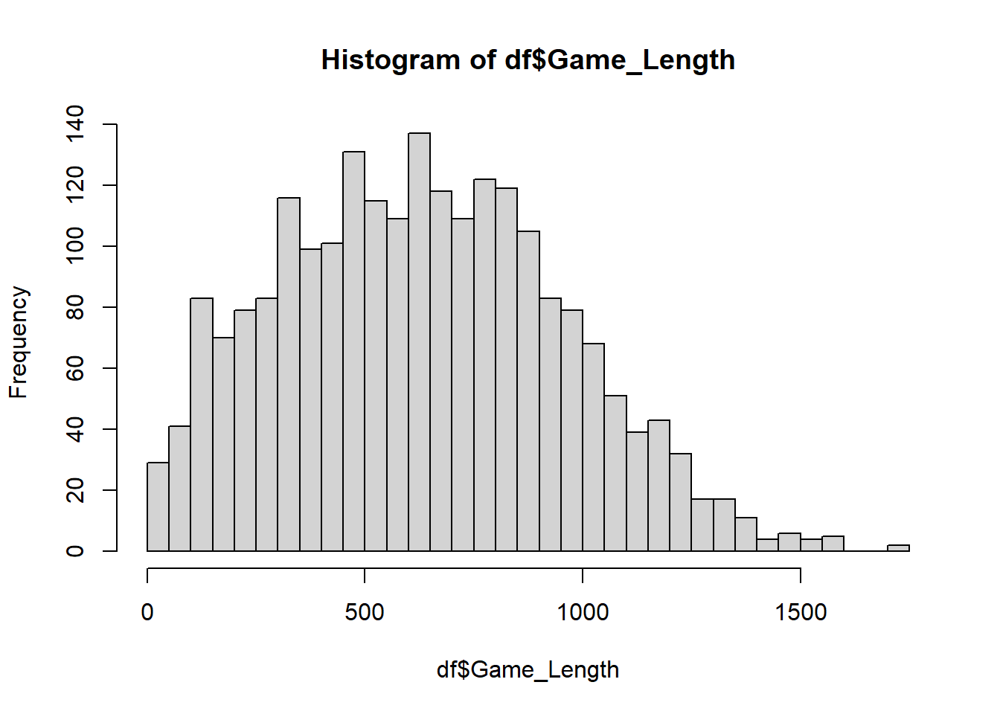

graph1 = barplot(mat1, beside = T,
main = 'Win / Lose',
legend = c('Win', 'Lose'))
출처
https://www.kaggle.com/datasets/ruchi798/among-us-dataset
MT 등지에서 많이들 플레이되는 마피아 게임을 온라인 게임으로 구현한 게임
최소 4명 ~ 최대 15명의 플레이어가 진행한다.
크루원
참가자들의 정체를 알 수 없다.
‘유령을 포함한’ 크루원 전원이 모든 임무를 완료하면 승리한다.
모든 임포스터를 투표로 방출하면 승리한다.
임포스터
참가자들의 정체를 알 수 있다.
살인 및 투표로 크루원을 제거해서 크루원과 임포스터의 생존 인원의 수를 같게 만들면 승리한다.
방해 공작의 제한 시간이 0이 되면 승리한다.
유령
투표로 방출되거나, 살해당할 경우 유령이 된다.
크루원 유령은 여전히 임무를 수행할 수 있다.
임포스터 유령은 여전히 방해공작을 펼칠 수 있다.


콰르토에서 판다스를 지원하지 않아 주피터로 데이터 전처리 시행
csv 1개로 통합
열 삭제
Game_Length 데이터를 초 단위로 변환
graph1 = barplot(mat1, beside = T,
main = 'Win / Lose',
legend = c('Win', 'Lose'))
CrossTable(result$Team, result$Outcome, chisq=T)
Cell Contents
|-------------------------|
| N |
| Chi-square contribution |
| N / Row Total |
| N / Col Total |
| N / Table Total |
|-------------------------|
Total Observations in Table: 2227
| result$Outcome
result$Team | 1 | 0 | Row Total |
-------------|-----------|-----------|-----------|
Crewmate | 981 | 780 | 1761 |
| 0.001 | 0.002 | |
| 0.557 | 0.443 | 0.791 |
| 0.790 | 0.792 | |
| 0.441 | 0.350 | |
-------------|-----------|-----------|-----------|
Imposter | 261 | 205 | 466 |
| 0.005 | 0.006 | |
| 0.560 | 0.440 | 0.209 |
| 0.210 | 0.208 | |
| 0.117 | 0.092 | |
-------------|-----------|-----------|-----------|
Column Total | 1242 | 985 | 2227 |
| 0.558 | 0.442 | |
-------------|-----------|-----------|-----------|
Statistics for All Table Factors
Pearson's Chi-squared test
------------------------------------------------------------
Chi^2 = 0.01358838 d.f. = 1 p = 0.9072015
Pearson's Chi-squared test with Yates' continuity correction
------------------------------------------------------------
Chi^2 = 0.004111993 d.f. = 1 p = 0.9488708
한 게임 당 평균 임포스터의 비율은 약 20.9%
크루원의 평균 승률: 55.7%
임포스터의 평균 승률: 56.0%
전체 평균 승률: 55.8%
카이스퀘어 검정 결과: 독립적
library(corrgram)
corrgram(df, upper.panel = panel.conf)임무 완료수와 게임 시간은 강한 양의 상관관계
임포스터의 킬수와 게임 시간 간의 상관관계에 대해서
뒤에서 따로 분석 실행
model1 <- lm(Game_Length ~ Imposter_Kills,
data=imposter)
summary(model1)
Call:
lm(formula = Game_Length ~ Imposter_Kills, data = imposter)
Residuals:
Min 1Q Median 3Q Max
-795.44 -235.90 -27.61 201.55 1007.67
Coefficients:
Estimate Std. Error t value Pr(>|t|)
(Intercept) 459.96 30.53 15.066 < 2e-16 ***
Imposter_Kills 66.18 12.33 5.367 1.27e-07 ***
---
Signif. codes: 0 '***' 0.001 '**' 0.01 '*' 0.05 '.' 0.1 ' ' 1
Residual standard error: 312.2 on 464 degrees of freedom
Multiple R-squared: 0.05845, Adjusted R-squared: 0.05642
F-statistic: 28.8 on 1 and 464 DF, p-value: 1.268e-07임포스터의 킬수와 게임시간은 상관관계가 있다.
CrossTable(imposter$Imposter_Kills, imposter$Outcome,
chisq = T)
Cell Contents
|-------------------------|
| N |
| Chi-square contribution |
| N / Row Total |
| N / Col Total |
| N / Table Total |
|-------------------------|
Total Observations in Table: 466
| imposter$Outcome
imposter$Imposter_Kills | 1 | 0 | Row Total |
------------------------|-----------|-----------|-----------|
0 | 6 | 10 | 16 |
| 0.979 | 1.246 | |
| 0.375 | 0.625 | 0.034 |
| 0.023 | 0.049 | |
| 0.013 | 0.021 | |
------------------------|-----------|-----------|-----------|
1 | 60 | 65 | 125 |
| 1.431 | 1.822 | |
| 0.480 | 0.520 | 0.268 |
| 0.230 | 0.317 | |
| 0.129 | 0.139 | |
------------------------|-----------|-----------|-----------|
2 | 95 | 72 | 167 |
| 0.023 | 0.029 | |
| 0.569 | 0.431 | 0.358 |
| 0.364 | 0.351 | |
| 0.204 | 0.155 | |
------------------------|-----------|-----------|-----------|
3 | 52 | 43 | 95 |
| 0.027 | 0.035 | |
| 0.547 | 0.453 | 0.204 |
| 0.199 | 0.210 | |
| 0.112 | 0.092 | |
------------------------|-----------|-----------|-----------|
4 | 38 | 12 | 50 |
| 3.568 | 4.542 | |
| 0.760 | 0.240 | 0.107 |
| 0.146 | 0.059 | |
| 0.082 | 0.026 | |
------------------------|-----------|-----------|-----------|
5 | 5 | 3 | 8 |
| 0.060 | 0.077 | |
| 0.625 | 0.375 | 0.017 |
| 0.019 | 0.015 | |
| 0.011 | 0.006 | |
------------------------|-----------|-----------|-----------|
6 | 4 | 0 | 4 |
| 1.382 | 1.760 | |
| 1.000 | 0.000 | 0.009 |
| 0.015 | 0.000 | |
| 0.009 | 0.000 | |
------------------------|-----------|-----------|-----------|
8 | 1 | 0 | 1 |
| 0.346 | 0.440 | |
| 1.000 | 0.000 | 0.002 |
| 0.004 | 0.000 | |
| 0.002 | 0.000 | |
------------------------|-----------|-----------|-----------|
Column Total | 261 | 205 | 466 |
| 0.560 | 0.440 | |
------------------------|-----------|-----------|-----------|
Statistics for All Table Factors
Pearson's Chi-squared test
------------------------------------------------------------
Chi^2 = 17.76726 d.f. = 7 p = 0.01306537
37.5% => 48% => 56.9% => 54.7% => 62.5% => …
0킬부터 점점 킬수가 많아질수록
임포스터의 승률은 높아진다.
CrossTable(crew$Murdered, crew$Outcome, chisq = T)
Cell Contents
|-------------------------|
| N |
| Chi-square contribution |
| N / Row Total |
| N / Col Total |
| N / Table Total |
|-------------------------|
Total Observations in Table: 1761
| crew$Outcome
crew$Murdered | 1 | 0 | Row Total |
--------------|-----------|-----------|-----------|
No | 589 | 305 | 894 |
| 16.620 | 20.903 | |
| 0.659 | 0.341 | 0.508 |
| 0.600 | 0.391 | |
| 0.334 | 0.173 | |
--------------|-----------|-----------|-----------|
Yes | 392 | 475 | 867 |
| 17.138 | 21.554 | |
| 0.452 | 0.548 | 0.492 |
| 0.400 | 0.609 | |
| 0.223 | 0.270 | |
--------------|-----------|-----------|-----------|
Column Total | 981 | 780 | 1761 |
| 0.557 | 0.443 | |
--------------|-----------|-----------|-----------|
Statistics for All Table Factors
Pearson's Chi-squared test
------------------------------------------------------------
Chi^2 = 76.21588 d.f. = 1 p = 2.542884e-18
Pearson's Chi-squared test with Yates' continuity correction
------------------------------------------------------------
Chi^2 = 75.38046 d.f. = 1 p = 3.882133e-18
살해됨 O : 승률 65.9%
살해됨 X : 승률 45.2%
CrossTable(crew$Ejected, crew$Outcome, chisq=T)
Cell Contents
|-------------------------|
| N |
| Chi-square contribution |
| N / Row Total |
| N / Col Total |
| N / Table Total |
|-------------------------|
Total Observations in Table: 1761
| crew$Outcome
crew$Ejected | 1 | 0 | Row Total |
-------------|-----------|-----------|-----------|
No | 965 | 741 | 1706 |
| 0.225 | 0.284 | |
| 0.566 | 0.434 | 0.969 |
| 0.984 | 0.950 | |
| 0.548 | 0.421 | |
-------------|-----------|-----------|-----------|
Yes | 16 | 39 | 55 |
| 6.994 | 8.797 | |
| 0.291 | 0.709 | 0.031 |
| 0.016 | 0.050 | |
| 0.009 | 0.022 | |
-------------|-----------|-----------|-----------|
Column Total | 981 | 780 | 1761 |
| 0.557 | 0.443 | |
-------------|-----------|-----------|-----------|
Statistics for All Table Factors
Pearson's Chi-squared test
------------------------------------------------------------
Chi^2 = 16.29995 d.f. = 1 p = 5.40655e-05
Pearson's Chi-squared test with Yates' continuity correction
------------------------------------------------------------
Chi^2 = 15.20549 d.f. = 1 p = 9.642273e-05
CrossTable(imposter$Ejected, imposter$Outcome, chisq=T)
Cell Contents
|-------------------------|
| N |
| Chi-square contribution |
| N / Row Total |
| N / Col Total |
| N / Table Total |
|-------------------------|
Total Observations in Table: 466
| imposter$Outcome
imposter$Ejected | 1 | 0 | Row Total |
-----------------|-----------|-----------|-----------|
No | 255 | 129 | 384 |
| 7.412 | 9.437 | |
| 0.664 | 0.336 | 0.824 |
| 0.977 | 0.629 | |
| 0.547 | 0.277 | |
-----------------|-----------|-----------|-----------|
Yes | 6 | 76 | 82 |
| 34.711 | 44.193 | |
| 0.073 | 0.927 | 0.176 |
| 0.023 | 0.371 | |
| 0.013 | 0.163 | |
-----------------|-----------|-----------|-----------|
Column Total | 261 | 205 | 466 |
| 0.560 | 0.440 | |
-----------------|-----------|-----------|-----------|
Statistics for All Table Factors
Pearson's Chi-squared test
------------------------------------------------------------
Chi^2 = 95.75303 d.f. = 1 p = 1.301475e-22
Pearson's Chi-squared test with Yates' continuity correction
------------------------------------------------------------
Chi^2 = 93.36984 d.f. = 1 p = 4.338108e-22
방출됨 X => O
크루원: 56.6% => 29.1%
임포스터: 66.4% => 7.3%
CrossTable(crew$All_Tasks_Completed, crew$Outcome, chisq = T)
Cell Contents
|-------------------------|
| N |
| Chi-square contribution |
| N / Row Total |
| N / Col Total |
| N / Table Total |
|-------------------------|
Total Observations in Table: 1761
| crew$Outcome
crew$All_Tasks_Completed | 1 | 0 | Row Total |
-------------------------|-----------|-----------|-----------|
No | 517 | 476 | 993 |
| 2.365 | 2.975 | |
| 0.521 | 0.479 | 0.564 |
| 0.527 | 0.610 | |
| 0.294 | 0.270 | |
-------------------------|-----------|-----------|-----------|
Yes | 464 | 304 | 768 |
| 3.058 | 3.846 | |
| 0.604 | 0.396 | 0.436 |
| 0.473 | 0.390 | |
| 0.263 | 0.173 | |
-------------------------|-----------|-----------|-----------|
Column Total | 981 | 780 | 1761 |
| 0.557 | 0.443 | |
-------------------------|-----------|-----------|-----------|
Statistics for All Table Factors
Pearson's Chi-squared test
------------------------------------------------------------
Chi^2 = 12.24361 d.f. = 1 p = 0.0004668534
Pearson's Chi-squared test with Yates' continuity correction
------------------------------------------------------------
Chi^2 = 11.90745 d.f. = 1 p = 0.0005590976
완료: X => O
승률: 52.1% => 60.4%
’크루원 전원’이 전체 임무를 완료해야하기 때문에
내가 전체 임무를 완료했다고 해서 승률이 드라마틱하게 오르지는 않는다.
hist(crew$Game_Length)
hist(imposter$Game_Length)crew.logit <- glm(Outcome ~ Task_Completed +
Game_Length + Sabotages_Fixed +
Ejected + Murdered,
data = crew,
family = binomial(link = 'logit'))
summary(crew.logit)
Call:
glm(formula = Outcome ~ Task_Completed + Game_Length + Sabotages_Fixed +
Ejected + Murdered, family = binomial(link = "logit"), data = crew)
Deviance Residuals:
Min 1Q Median 3Q Max
-1.7685 -0.9925 -0.7795 1.1165 1.8030
Coefficients:
Estimate Std. Error z value Pr(>|z|)
(Intercept) -0.4136189 0.1308047 -3.162 0.001566 **
Task_Completed 0.0096601 0.0263692 0.366 0.714110
Game_Length -0.0007916 0.0002053 -3.856 0.000115 ***
Sabotages_Fixed 0.1164252 0.0684893 1.700 0.089149 .
EjectedYes 1.6647343 0.3083110 5.400 6.68e-08 ***
MurderedYes 1.0532182 0.1045730 10.072 < 2e-16 ***
---
Signif. codes: 0 '***' 0.001 '**' 0.01 '*' 0.05 '.' 0.1 ' ' 1
(Dispersion parameter for binomial family taken to be 1)
Null deviance: 2418.3 on 1760 degrees of freedom
Residual deviance: 2285.0 on 1755 degrees of freedom
AIC: 2297
Number of Fisher Scoring iterations: 4exp(coef(crew.logit)) (Intercept) Task_Completed Game_Length Sabotages_Fixed EjectedYes
0.6612529 1.0097070 0.9992088 1.1234734 5.2842691
MurderedYes
2.8668624 방출됨 O, 살해당함 O => 승률 ↑
게임 시간 ↑ => 승률 ↓
imposter.logit <- glm(Outcome ~ Imposter_Kills +
Game_Length + Ejected,
data = imposter,
family = binomial(link = 'logit'))
summary(imposter.logit)
Call:
glm(formula = Outcome ~ Imposter_Kills + Game_Length + Ejected,
family = binomial(link = "logit"), data = imposter)
Deviance Residuals:
Min 1Q Median 3Q Max
-2.7803 -0.7787 -0.5124 0.8034 2.2162
Coefficients:
Estimate Std. Error z value Pr(>|z|)
(Intercept) -1.3732722 0.3123550 -4.397 1.10e-05 ***
Imposter_Kills -0.5220570 0.1148085 -4.547 5.44e-06 ***
Game_Length 0.0028602 0.0004118 6.946 3.76e-12 ***
EjectedYes 3.4611606 0.4534005 7.634 2.28e-14 ***
---
Signif. codes: 0 '***' 0.001 '**' 0.01 '*' 0.05 '.' 0.1 ' ' 1
(Dispersion parameter for binomial family taken to be 1)
Null deviance: 639.27 on 465 degrees of freedom
Residual deviance: 465.33 on 462 degrees of freedom
AIC: 473.33
Number of Fisher Scoring iterations: 5exp(coef(imposter.logit)) (Intercept) Imposter_Kills Game_Length EjectedYes
0.2532768 0.5932989 1.0028643 31.8539256 방출됨 O, 게임시간 ↑ => 승률 ↑
크루원 킬수 ↑ => 승률 ↓